中文
中文 English
English股票观察表
我要选择国家
前往 JStock 顶部菜单中的"国家"，并选择您想要的国家。目前，总共有26个被支援的国家。
我要添加股票。
在"股票观察表"页面的中间，有一个文本框。要添加股票，只需输入股票简称前缀，股票代码或汉语拼音。然后按 ENTER 键。智能股票查询系统将提示您可供选择的股票。 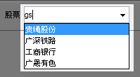
JStock 显示出一系列一样名称的股票。
这种情况会发生，如果您的国家有多个交易所。为了避免混淆，您可以去"选项-> 选项...-> 用户界面"。选者"显示2列股票信息"。过后，您就可看到一下的股票列表。 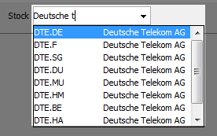
我找不到某某股票。
- 前往"数据库-> 股票数据库..."
- 下面的屏幕将被显示。 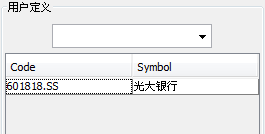
- 在文本框输入股票代码，JStock 会提供您一系列股票供选择。 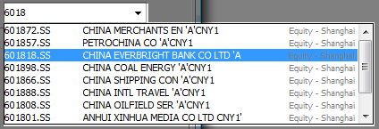<
- （可选）如您对 JStock 的选项不满意，您可双点击名称自行编辑。
- （可选）如您知道股票代码，如5199WA.KL，只需在文本框输入“5199WA.KL”，再按回车键。
我如何才能收到 JStock 短讯警报？
你需要一个谷歌日历帐户，并注册您的手机。只要遵循以下4个步骤，您就能启用 JStock 短信警报功能。欲了解更多信息，请访问 谷歌日历帮助。这项免费服务是由谷歌提供的。请看短讯通知的费用。
{kind=link}
{kind=link}
{kind=link}
{kind=link}
如何查看股票的历史？
用鼠标点击任何股票。通过以下的图标选择"历史..."  。
。
当股票的价格达到一定水平，我希望被通知。
键入您想要的股票价格在"低价警报"与"高价警报"栏。 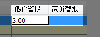
- 低价警报 - 如果股票的最后价格低于或等于这个值，您将收到警报。
- 高价警报 - 如果股票的最后价格高于或等于这个值，您将收到警报。
记得在这里选择您喜欢的警报方式"选项-> 选项...-> 警报"。
我希望从我公司的电子邮件收到股票警报。
前往"选项-> 选项...-> 警报"。您必须有一个免费的 GMail 帐户，以接收通过电子邮件库存警报。但是，我们也支援任何电子邮件地址。您可以在"抄送"项目中输入其他的电子邮件地址。 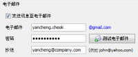
JStock 占用太多的网络带宽！
默认情况下，JStock 的股票价格刷新速度为5秒。 为了节省您的网络带宽，您可把它调整到更高的价值，如60分钟。
- 前往"选项-> 选项...-> 速度"。 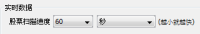
- 调整到60分钟。越高数值，刷新速度就会越慢。
- 越慢的刷新速度，JStock 就不会频密地联系服务器。
- 就这样，她就不会占用太多的网络带宽。
- 每当您想要马上刷新股价, 只需前往"编辑-> 刷新股价"。
- 或，您可以用"Ctrl + R"键盘快捷键马上刷新股价。
没有网络连接。股票价格不被更新。
很可能您处在公司的网络中。请尝试以下。
- 前往"选项-> 选项...-> 网路"，寻找下面的按钮。 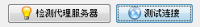
- 点击"测试连接"。它是否给你任何提示？
- 点击"检测代理服务器"。如果它建议您一个新的代理服务器，点击"确定"。是否有帮助？
- 重新启动 JStock 。现在它能正常操作吗？
- 抱歉，您必须咨询您的网络管理员了。（提示：要善待他们）
股票价格有延误有吗？
目前，JStock 的股票价格是取自于 Yahoo! 财经及 Google 财经。取决于国家，股票价格可以是实时或迟延。
- Australia, Google 财经 : 迟延 or Yahoo! 财经 : 迟延
- Austria, Yahoo! 财经 : 迟延
- Belgium, Google 财经 : 实时 or Yahoo! 财经 : 迟延
- Brazil, Yahoo! 财经 : 迟延
- Canada, Yahoo! 财经 : 迟延
- China, Google 财经 : 实时
- Denmark, Yahoo! 财经 : 迟延
- France, Yahoo! 财经 : 迟延
- Germany, Yahoo! 财经 : 迟延
- Hong Kong, Google 财经 : 迟延 or Yahoo! 财经 : 迟延
- India, Google 财经 : 实时
- Indonesia, Yahoo! 财经 : 迟延
- Israel, Yahoo! 财经 : 迟延
- Italy, Yahoo! 财经 : 迟延
- Korea, Yahoo! 财经 : 迟延
- Malaysia, Yahoo! 财经 : 迟延
- Netherlands, Yahoo! 财经 : 迟延
- NewZealand, Yahoo! 财经 : 迟延
- Norway, Yahoo! 财经 : 迟延
- Portugal, Yahoo! 财经 : 迟延
- Singapore, Google 财经 : 实时 or Yahoo! 财经 : 迟延
- Sweden, Google 财经 : 实时 or Yahoo! 财经 : 迟延
- Switzerland, Yahoo! 财经 : 迟延
- Taiwan, Google 财经 : 实时 or Yahoo! 财经 : 迟延
- United Kingdom, Google 财经 : 实时 or Yahoo! 财经 : 迟延
- United State, Google 财经 : 实时 or Yahoo! 财经 : 迟延
我如何能选择 Yahoo! 财经或 Google 财经成为价格来源?
前往"选项-> 选项...-> 网路"。备注，有的国家只有单一选项。
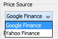
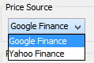
可有快捷键，来移动图表的黄色讯息框？
除了滑鼠，您可用左右方向键。
我发现 JStock 提议的股票表不是最新的。
尝试双点击网路图标，看能不能得到最新的股票资料库。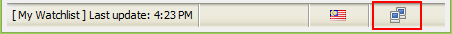
即日鲜图表呢？
我们把她隐藏着了。要显示他，您可以通过"选项-> 选项...-> 用户界面"。勾选上"显示即日鲜图表"。
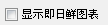
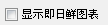